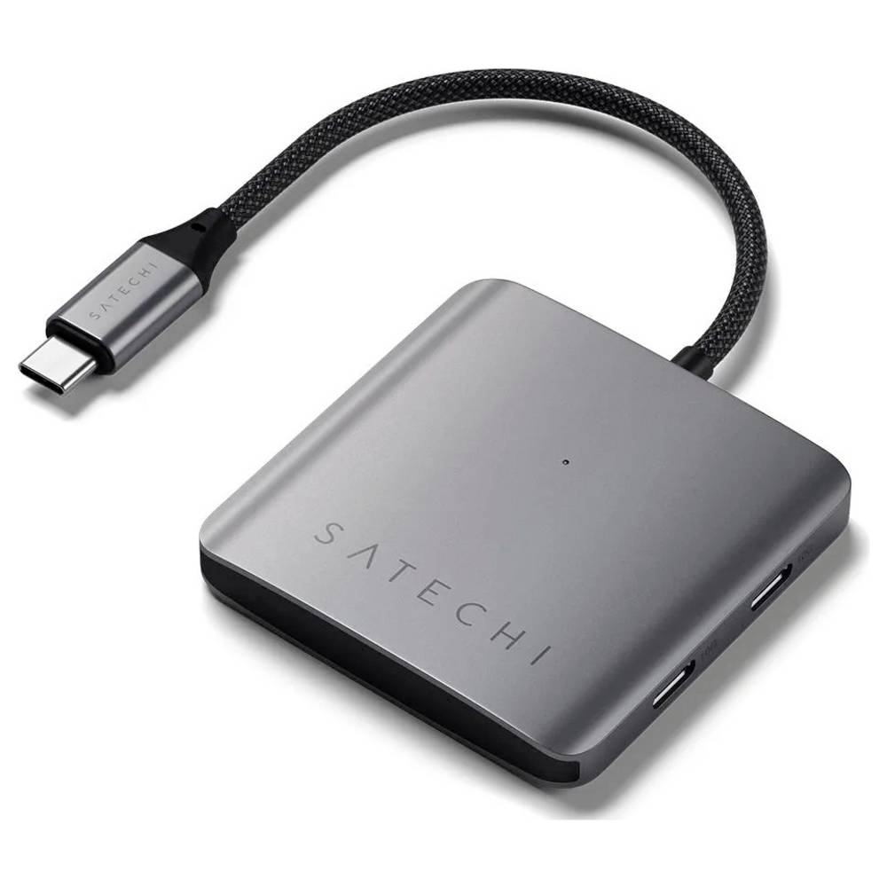
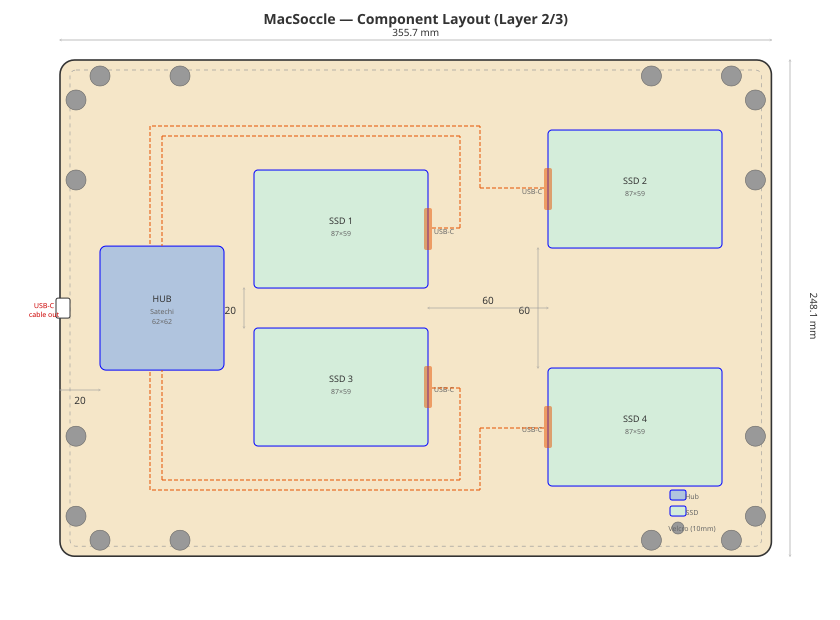
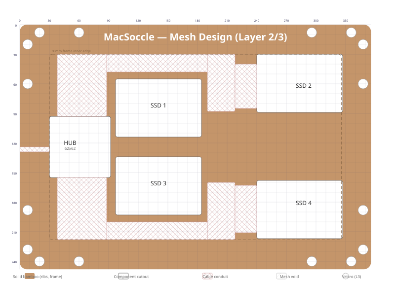

MacSoccle¶
A laser-cut bamboo base plate ("socle") for a MacBook Pro 16" M1, with integrated storage for 4 external SSDs and a USB-C hub.
Concept¶
A flat horizontal plate that sits under or next to the MacBook Pro, matching its exact footprint and corner rounding. It hides 4 Samsung SSDs and a Satechi USB-C hub inside, connected with short cables, keeping the desk clean.
Overall dimensions¶
| Parameter | Value |
|---|---|
| Width | 355.7 mm |
| Depth | 248.1 mm |
| Height | 16.8 mm |
| Corner radius | ~7.25 mm (matching MacBook Pro 16" rounding, ≈ AA battery radius) |
Layer stack-up¶
The plate is built from 4 layers of laser-cut bamboo. Layers 1-3 are glued together with wood glue. Layer 4 (top) is removable for access to SSDs.
| Layer | Thickness | Attachment | Function |
|---|---|---|---|
| 1 (bottom) | 1.5 mm | glued | Solid bottom plate, full footprint |
| 2 | 5 mm | glued | Internal frame with cutouts for components |
| 3 | 5 mm | glued | Internal frame with cutouts for components |
| 4 (top) | 1.5 mm | velcro | Removable top plate, full footprint |
Layer 3 has 16 small holes (10 mm) for velcro dots that connect layer 2 to layer 4 through layer 3. This keeps the velcro inside the stack with no extra height.
- 4 dots on each side, grouped near corners (~20 mm from corner)
- Total: 16 velcro dots (10 mm diameter)
Total height: 1.5 + 5 + 5 + 1.5 = 13 mm (~13 mm + rubber feet)
The two outside layers (1 and 4) are 1.5 mm bamboo plywood for a sleek profile. The inside faces of layers 1 and 4 are lined with aluminium foil to spread heat from the SSDs and hub. The two center layers (2 and 3) use a mesh/grid pattern in unused areas to reduce weight.
Internal components¶
Samsung T7 SSD (x4)¶
Samsung T7 Portable SSD
| Parameter | Value |
|---|---|
| Dimensions | 85 x 57 x 8 mm |
| Cutout needed | 87 x 59 mm per SSD (1 mm clearance) |
| Total height | 8 mm (fits within 2 center layers of 5 mm each) |
Satechi 4-Port USB-C Hub¶
Satechi 4-Port USB-C Hub with PD (ST-H4CPDM)

| Parameter | Value |
|---|---|
| Dimensions | 60 x 60 x 10 mm |
| Cutout needed | 62 x 62 mm (1 mm clearance) |
| Total height | 10 mm (fits exactly within 2 center layers of 5 mm each) |
Cables¶
- The 4 SSDs connect to the hub internally using the stock Samsung T7 USB-C cables (45 cm, routed path is ~35 cm)
- Cable channels routed in center layers between hub and SSD positions
- Only the hub's own USB-C cable exits the soccle, from the middle of one short side (works for left or right USB-C ports on the MacBook)
Component layout 1¶
Hub near cable exit (left short side), 4 SSDs in a 2x2 grid to the right. Hub has 2 USB-C ports on north side (→ SSD1, SSD2) and 2 on south side (→ SSD3, SSD4). Cables run along the top and bottom edges, on the outside of the SSDs.

The two center layers (2 and 3) have: * Component cutouts for SSDs, hub, and hub cable exit * Cable conduit channels (10mm wide) along top/bottom edges and vertical runs to hub * Mesh cutouts in all remaining open areas to minimize weight * Max 10mm solid ribs between cutouts for structural integrity * 30mm solid frame along all edges * Layer 3 additionally has 16 velcro holes (10mm)
